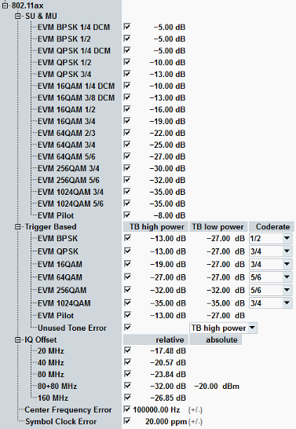

Modulation limits for 802.11ax signals are specified in the standard IEEE 802.11ax. The R&S CMW supports limit checks for the following modulation characteristics:
Characteristics | Refer to IEEE 802.11ax, section... | Specified limit | |
|---|---|---|---|
EVM (RMS) | 28.3.18.4.3 Transmitter constellation error | HE SU PPDU and HE MU PPDU: < -5 dB (BPSK, 1/2, with DCM) < -5 dB (BPSK, 1/2, without DCM) < -5 dB (QPSK, 1/2, with DCM) < -10 dB (QPSK, 1/2, without DCM) < -13 dB (QPSK, 3/4, without DCM) < -10 dB (16-QAM, 1/2, with DCM) < -13 dB (16-QAM, 3/4, with DCM) < -16 dB (16-QAM, 1/2, without DCM) < -19 dB (16-QAM, 3/4, without DCM) < -22 dB (64-QAM, 2/3, without DCM) < -25 dB (64-QAM, 3/4, without DCM) < -27 dB (64-QAM, 5/6, without DCM) < -30 dB (256-QAM, 3/4, without DCM) < -32 dB (256-QAM, 5/6, without DCM) < -35 dB (1024-QAM, 3/4, without DCM) < -35 dB (1024-QAM, 5/6, without DCM) | |
HE TB PPDU PTX > max PMCS7 < -13 dB (BPSK, 1/2, with DCM) < -13 dB (BPSK, 1/2, without DCM) < -13 dB (QPSK, 1/2, with DCM) < -13 dB (QPSK, 1/2, without DCM) < -13 dB (QPSK, 3/4, without DCM) < -13 dB (16-QAM, 1/2, with DCM) < -13 dB (16-QAM, 3/4, with DCM) < -16 dB (16-QAM, 1/2, without DCM) < -19 dB (16-QAM, 3/4, without DCM) < -22 dB (64-QAM, 2/3, without DCM) < -25 dB (64-QAM, 3/4, without DCM) < -27 dB (64-QAM, 5/6, without DCM) < -30 dB (256-QAM, 3/4, without DCM) < -32 dB (256-QAM, 5/6, without DCM) < -35 dB (1024-QAM, 3/4, without DCM) < -35 dB (1024-QAM, 5/6, without DCM) | HE TB PPDU PTX ≦ max PMCS7 < -27 dB (BPSK, 1/2, with DCM) < -27 dB (BPSK, 1/2, without DCM) < -27 dB (QPSK, 1/2, with DCM) < -27 dB (QPSK, 1/2, without DCM) < -27 dB (QPSK, 3/4, without DCM) < -27 dB (16-QAM, 1/2, with DCM) < -27 dB (16-QAM, 3/4, with DCM) < -27 dB (16-QAM, 1/2, without DCM) < -27 dB (16-QAM, 3/4, without DCM) < -27 dB (64-QAM, 2/3, without DCM) < -27 dB (64-QAM, 3/4, without DCM) < -27 dB (64-QAM, 5/6, without DCM) < -30 dB (256-QAM, 3/4, without DCM) < -32 dB (256-QAM, 5/6, without DCM) < -35 dB (1024-QAM, 3/4, without DCM) < -35 dB (1024-QAM, 5/6, without DCM) | ||
I/Q offset | 28.3.18.4.2 Transmit center frequency leakage | < -17.48 dB (20 MHz) < -20.57 dB (40 MHz) < -23.84 dB (80 MHz) < -32 dB and -20 dBm (80+80 MHz) < -26.85 dB (160 MHz) | |
Frequency error and symbol clock error | 28.3.18.3 Transmit center frequency and symbol clock frequency tolerance | < ±20 ppm | |
The limit line for unused tone error is configured indirectly via specifying a limit for occupied subcarrier HE TB PPDU transmitted with high or low power. See also IEEE 802.11ax, formula 28-127. The coding rate of HE TB PPDU is not signaled, specify it in the GUI.
All limits can be set in the configuration dialog:
